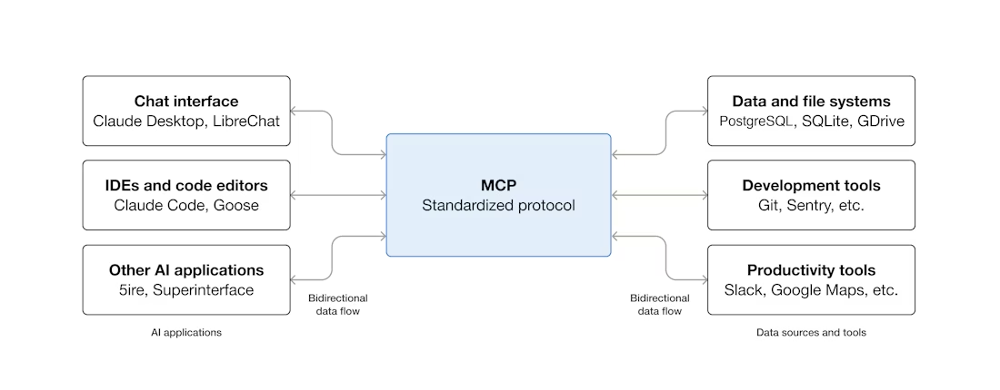
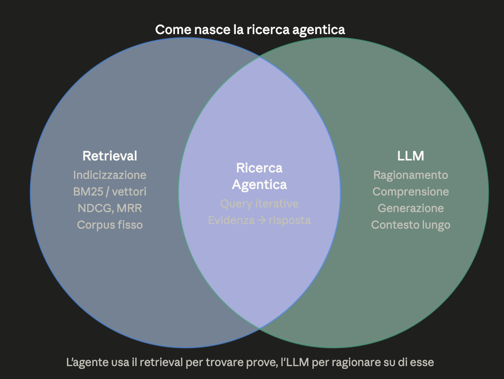
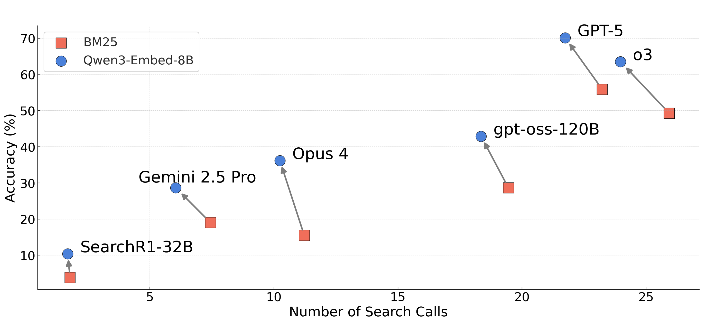
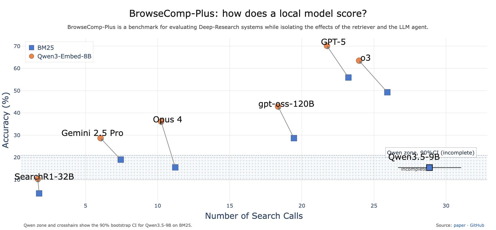
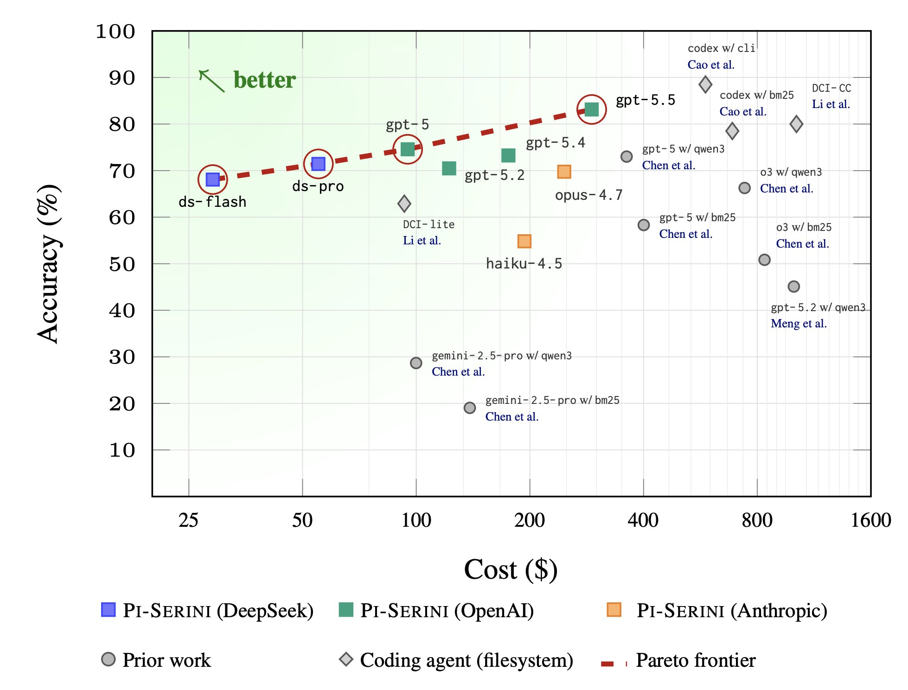
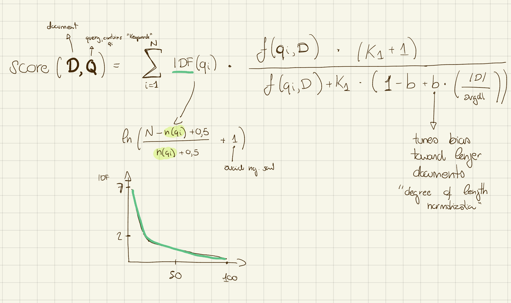
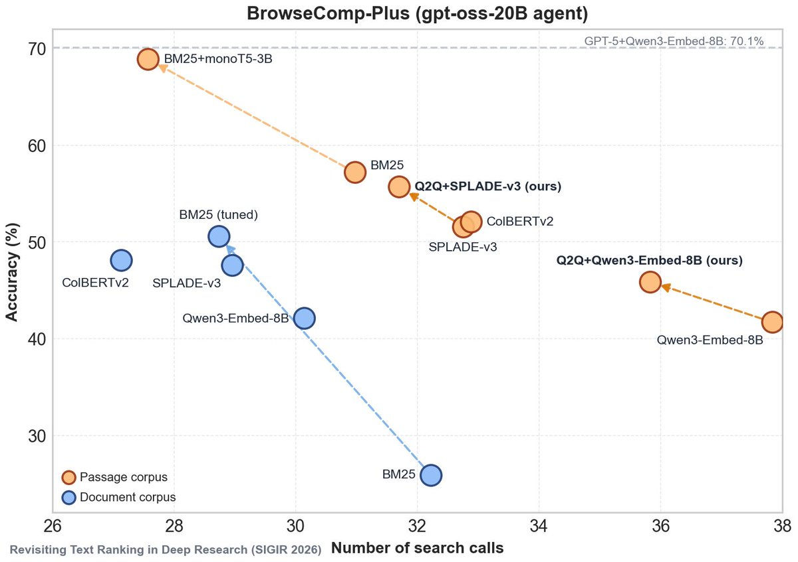
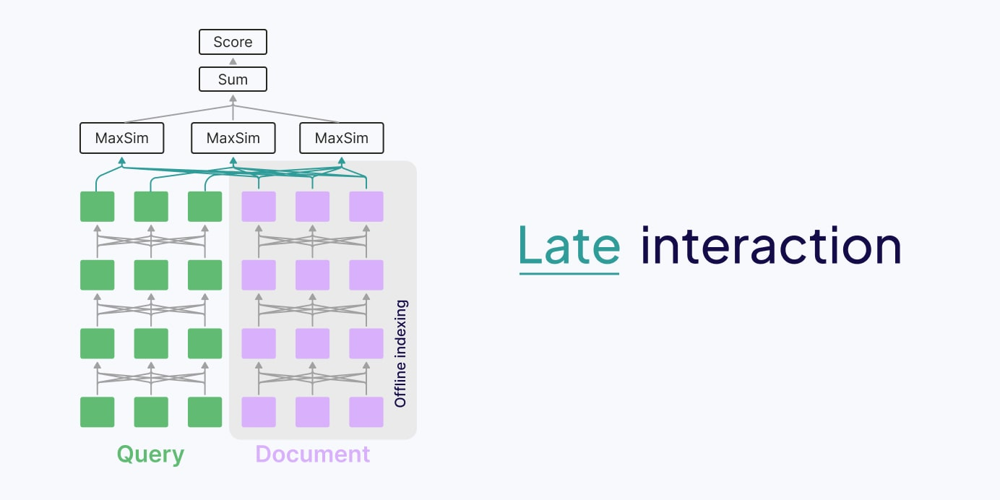
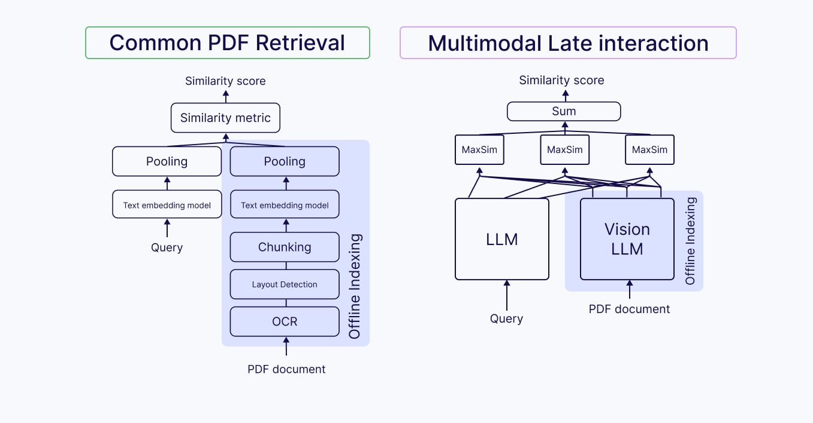

Search in the era of AI Agents
local tools for privacy, understanding (and fun)
repo → github.com/coffepowered/pycon-italy-workshop-agentic-search
About me
- Andrea Ruggerini — GitHub @coffepowered
- I build Search and AI things at Soource, day to day
- Why this workshop: retrieval is a tool. It makes the LLMs truly useful.
- Find me after for questions, the repo, and the slides
What you'll get out of today
- This is a workshop — it'll be a hands-on experience
- But I'll give framing and resources too: things I find valuable
- Build Retrieval tools to enhance knowledge work — not strictly coding (LLMs are great at coding, we know that)
- Once done, you'll…
- have experienced firsthand a few retrieval techniques — their use cases, pros & cons
- have a feel for which technique fits which question — and why eval is what drives improving them
Motivation
Some personal
- Consuming information is not enough
- Our knowledge base is our second brain
Some professional
- Useful patterns for work
- Work seems to be shifting towards building tools
Old world vs New world
| Old world | New world | |
|---|---|---|
| Privacy | data stayed local, we cared | prompts & files shipped to a cloud — do we still? |
| Energy | a search was practically free | every answer burns GPU time — do we care? |
| Information | hard to obtain | trivial to obtain, rarely consumed |
Yet, powerful LLMs are here to stay — and to improve.
MCP · Intro & set-up
Not a workshop about MCP — but we'll use it
- We stay Host/Client independent — use the tool you want
- MCP is standard in the industry — worth using
- The Python MCP toolkit has a nice inspector

Definition & resources
MCP (Model Context Protocol) is an open-source standard for connecting AI applications to external systems — data sources, tools and workflows — enabling them to access key information and perform tasks.
- Introduction
- Participants
- Advanced: Sessions — we won't use it, but…
Three core primitives
What servers can expose — the contextual info shared and the actions performed.
01 Tools
Executable functions the AI can invoke — file ops, API calls, DB queries.
02 Resources
Data sources that provide context — file contents, DB records, API responses.
03 Prompts
Reusable templates structuring interactions — system prompts, few-shot examples.
You are building an MCP server to provide recipes from a book. Which kind of primitive are you using — and why?
A minimal stack, on purpose
No heavyweight RAG framework hiding what's going on. Five small, composable pieces:
The point is to see the retrieval, not the framework.
Get set-up
1. The workshop repo
git clone https://github.com/coffepowered/
pycon-italy-workshop-agentic-search
cd pycon-italy-workshop-agentic-search
uv sync2. A harness with an MCP client
I'll use codex cli (Apache-licensed). Free plan is enough.
npm install -g @openai/codex3. The sample KB (a PDF)
Download it and drop it into the documents/ folder.
drive.google.com/file/d/1f4skbLl…
Optional but fun
Track how many tokens we burn as we go:
bunx ccusage codex session \
--color --since 2026-05-30We start with one tool already wired
server.py ships with one built-in tool — a PDF viewer:
get_page_for_llm(pdf_path, page, mode="text" | "image")mode="text"→ the page text (cheap)mode="image"→ the page rendered as a PNG (layout, tables, figures)- Each exercise adds one more tool to this same server — stubs already in
server.py
Exercise 1 · Is grep all we need?
grep_documents toolHo voglia di una salsa con le acciughe, cerca tra i miei files
- Watch what the agent actually does. Does it find it? How?
- How many tokens did it burn? (track usage 🙂)
- Hold on to that number — we'll try to beat it later.
A deep dive on recent agentic retrieval
- Evaluation is important.
- We have benchmarks for industrial agentic search & document VQA — but for personal use, the judge is you.
- Efficiency is a thing — for speed and for the planet.
What is retrieval?
Given a query q and a corpus C = {d₁ … dₙ}, retrieval returns an ordered list D ⊂ C ranked by estimated relevance to q. A retriever learns a scoring function:
score(q, d) → ℝ — used to rank all d ∈ C
Effectiveness
does it surface the right documents?
Efficiency
millions/billions of docs in milliseconds?
Generalization
unseen domains & query types?
Metrics
| Metric | What it measures | Intuition |
|---|---|---|
| Precision@k | fraction of top-k that are relevant | rel. docs in top-k / k |
| Recall@k | fraction of all relevant docs found in top-k | rel. docs in top-k / total rel. |
| NDCG@k ⭐ | graded relevance + a position discount | rewards the most relevant docs highest |
Precision and recall trade off; NDCG is the one to watch when ranking order matters.
The retriever as a tool

A late 19th-century mock-heroic poem describes three Roman deities — two male, one female — resting at the 'Corona' inn in a town contested by Bologna and Modena. A one-eyed innkeeper created a famous ring-shaped stuffed pasta by peeping through a keyhole and imitating the navel of the sole female deity. Name this goddess, and the primary profession of the Florentine-born author who wrote the poem.
Un poemetto eroicomico di fine Ottocento descrive tre divinità romane — due maschi e una femmina — che si fermano alla locanda 'Corona', in una cittadina contesa tra Bologna e Modena. Un oste guercio creò una celebre pasta ripiena ad anello spiando dal buco della serratura e imitando l'ombelico dell'unica divinità femminile. Qual è il nome della dea, e la professione principale dell'autore di origini fiorentine?
What LLMs can do — and why they keep improving
- Modern LLM agents iterate: search → read → reason → search again — genuinely multi-hop.
- The key unlock for research: separate the retriever's contribution from the agent's.
- A wrong answer — a retrieval miss (never found the doc) or a reasoning miss (had it, blew the inference)?
- Measuring those two halves independently drove a lot of recent progress.
- That separation is exactly what a controlled-corpus benchmark like BrowseComp-Plus gives us 👇
A fixed-corpus benchmark for deep-research agents
LLMs that iteratively issue search queries, retrieve documents, and reason to answer complex multi-hop questions.
Problems with vanilla BrowseComp
- Relies on live, black-box web APIs (Google/Bing) → non-reproducible
- Can't isolate retriever failures from reasoning failures — the two are entangled
- Different runs see different web states → no fair comparison
A controlled corpus
100,195 human-verified documents, built in two stages:
- Automated evidence gathering — o3 collects candidate supporting docs for each of the 830 queries
- Human verification — annotators confirm true positives and label relevance
- Hard-negative mining — semantically similar but non-answering docs stress-test retrievers
Each query ships with gold documents and hard negatives → isolated evaluation of retriever and agent independently.
Two components, measured independently
Retriever swap matters: better accuracy and fewer search calls — retriever quality is now a first-class, isolatable variable. source

Even "tiny" local models are getting good
Reproducible research is as needed as open-source software! Yet that's not the whole story.
~800k tokens
In a personal experiment, that's the average it took to reach that score — a number I trust because I measured it myself. Good, but impractical.

The cost of reproducibility

Text Ranking · BM25
Okapi BM25 (Best Matching) is a ranking function used by search engines to estimate the relevance of documents to a query — a bag-of-words function built on the probabilistic retrieval framework of the 1970s–80s.

Modern BM25 software
- A barebone BM25 index starts at about 25% the size of the text (rule of thumb). Expect more in applications.
- Engines supporting BM25 typically have very interesting features for text search — tokenizers, phrase search, n-grams…
Let's take a look at LanceDB. In a notebook, like the good old days → scripts/lance_fts.py
Exercise 2 · BM25 search
search_documents_bm25Implement it, then ask Codex
- Implement the
search_documents_bm25tool (stub inserver.py). - Remember there's the index building phase as well!
polpette di carne lessata avanzata
Are you done?
How long — and how many tokens — to find…
polpette di carne lessata avanzata
…with our new tool versus grep in Exercise 1?
Is BM25 the solution for deep research?
Who knows — but people are talking about this.
From Doug Turnbull's newsletter, elaborated from this paper.

Brief notes on vector retrieval
From lexical to semantic
- BM25 matches surface tokens — exact words, no meaning
- "car" and "automobile" are just different tokens, full stop
- dense / vector retrieval encodes meaning into numeric vectors
- an embedding model maps query & doc into the same space
- ranking is then just vector similarity (e.g. cosine)
- sparse (BM25): high-dim, mostly zeros, one weight per term
- dense: a few hundred/thousand floats, every dim carries signal
- not either/or — in practice you often combine both (hybrid)
- two flavors: single-vector (bi-encoder) & late-interaction / multi-vector
We know them from 2023/24 RAG
✓ The good
- very easy to get started
- excellent when fine-tuned on your domain
- handles synonyms & "semantic" meaning
- indexing is well understood
✗ The bad
- out-of-domain generalization
- similarity ≠ relevance
- cramming 'everything' in a single vector
Why they still rule production: one vector/doc → a single ANN lookup. Blazing fast, tiny index, scales to billions. Speed/cost/simplicity wins, and fine-tuning closes most of the gap.
One vector per token, not per doc
- keeps one vector per token instead of pooling them away
- per query token: max similarity vs every doc token (MaxSim), then sum the maxima → score
- token-level matching is also explainable
The middle ground: bi-encoder is fast but lossy; cross-encoder is accurate but doesn't scale; late interaction precomputes doc vectors offline, encoding only the query at runtime.
Tradeoff: better out-of-domain & precision — at the cost of a much larger index.

A visual walk-through of how MaxSim works
Have a clear advantage

Exercise 3 · multimodal search
If the model is already downloaded and you're on Apple Silicon, give it a go. Otherwise we'll run it together as a demo. Non-mac / text-only folks: pair up and watch.
Goal: search_documents_multimodal
ColQwen2.5 reads each page as an image — matching figures, tables & layout that BM25 never sees. One object (ColQwenIndex) both builds (render & embed visual pages) and searches (MaxSim, exact flat scan).
Safe to Ctrl-C and rerun — it resumes from the next un-embedded page. Then expose it as the MCP tool.
# build the index (-v for per-page progress)
uv run python -m solutions.indexer documents -v
# cap pages per doc to keep it cheap
... documents --max-pages-per-doc 5 -v
# build + query in one go
... documents --query "energy AI" --k 10 -v
# query an ALREADY-built index
... --no-build --query "energy AI" --k 10 -v
# re-index from scratch
... documents --force -vHow long — and how many tokens — to find the page that shows…
lo schema di come la RAG è evoluta dal 2023 al 2026
…an answer in a diagram, not in its words. How does it compare to BM25?
Find data about the energy consumption of data centers.
Conclusions
What to take home
- Retrieval is a tool, not a framework. A handful of libraries took us agentic grep → BM25 → multimodal late-interaction — no LangChain required.
- The technique follows the question. grep for exact strings, BM25 for lexical recall, late-interaction/multimodal for meaning and layout. Each exercise broke the previous query for a reason.
- Efficiency is a first-class metric. Speed and the planet both count — but we still need fairly large models for good agentic search.
- Agents & harnesses keep improving — but mental models and the ability to compose tools stay the durable skill.
Eval drives improvement — the 5-line version
- Collect real queries — log what you (or the LLM) actually ask your KB. Don't invent them.
- Label a handful — for ~20–50 queries, note which page/doc should come back. You are the judge.
- Score your tools — run grep / BM25 / multimodal, count hits@k. "Better" is now a number, not a vibe.
- Optimize the weak half — chunking, tokenizer, retriever, prompt. Re-run. Repeat.
Match the tool to the query you actually expect. Most personal-KB questions aren't BrowseComp-style deep research — they're "where did I read X". Build for your interests.
It all runs locally, today
…while minimizing what you expose and what you spend — data, energy, inference cost.
To go deeper
- A full tour of RAG, document context & AI agents, 2023→2026 — @hexapode (link)
- Search for code & text is running fast, even locally
- Recent retrieval talk by @bclavie, mixedbread.ai (link)
- What agentic retrieval looks like — blog post by Jo Bergum
Andrea Ruggerini · @coffepowered · github.com/coffepowered/pycon-italy-workshop-agentic-search